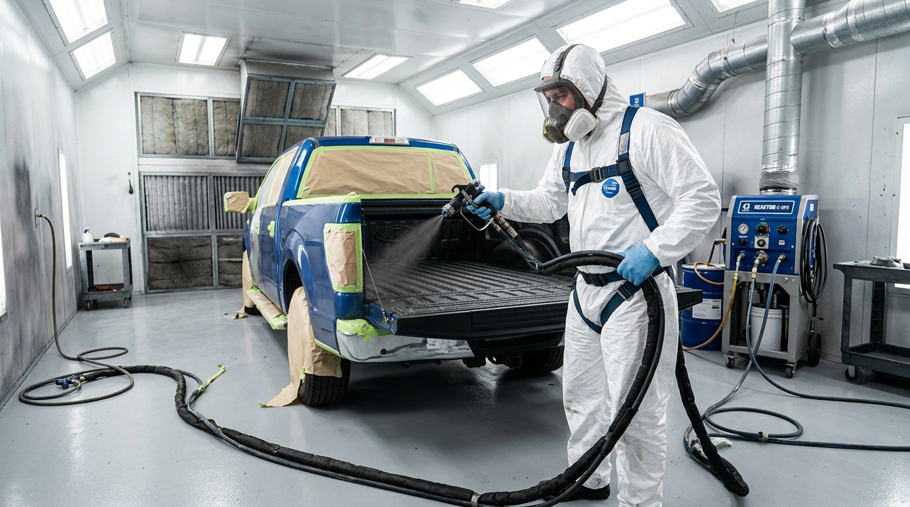

Truck owners, commercial fleets, and off-road builders across North Texas drive to our centralized Royse City shop for high-pressure polyurea bedliners and armor.
Unlike makeshift mobile setups that risk windblown grit, humidity blips, and overspray onto neighbors' cars, Blackhawk Protective Coatings operates a dedicated, climate-controlled facility in Royse City, TX (4853 TX-276 Unit # 24). Situated directly on TX-276 just minutes from I-30, our shop provides rapid highway access from anywhere in North Texas.

Click your local city below for customized drive-in highway directions to our Royse City shop and localized service information.
Serving Mid-Cities truck owners with convenient drop-off access via Hwy 183 and I-30 East.
Serving Tarrant County truck owners via I-30 E through Dallas directly to TX-276 in Royse City.
Take I-30 E through Dallas directly into Rockwall and Royse City on TX-276.
Serving South Tarrant & Ellis County via I-20 E to Hwy 80 E / FM 548 N to TX-276.
Convenient access via I-30 E across Lake Ray Hubbard directly to TX-276 in Royse City.
Serving East Dallas County via I-30 E past Rockwall directly to TX-276.
Fast highway connection via I-30 E or Hwy 80 E / FM 548 N to TX-276.
Direct route down President George Bush Turnpike (PGBT) to I-30 E onto TX-276.
Direct drive via Hwy 121 / PGBT to I-30 E onto TX-276.
Serving North Collin County via Hwy 380 E or Hwy 78 / FM 548 S to TX-276.
Quick access via US-75 / PGBT to I-30 E onto TX-276.
Serving Denton County via I-35E S to I-635 E to I-30 E onto TX-276.
Serving Lake Ray Hubbard truck owners just minutes east via TX-276 E.
Serving custom truck and boat tower owners in Heath via FM 740 to TX-276 E.
Direct highway route via Hwy 66 or PGBT to I-30 E onto TX-276.
Central shop facility at 4853 TX-276 Unit # 24. Walk-ins, early bird drop-offs, and commercial fleet intakes.
Convenient access via FM 548 N directly to TX-276 East.
Serving Kaufman County agriculture and utility trucks via US-80 W / I-30 W.
Direct commute along I-30 W into the DFW Mid-Cities facility.
Serving Hunt County agricultural trucks and trailers via TX-34 S to I-30 W.
Commercial fleet drop-offs from East Texas via I-20 W to Hwy 360 N.
Regional contractor and commercial utility fleet drop-offs via the I-30 W corridor.